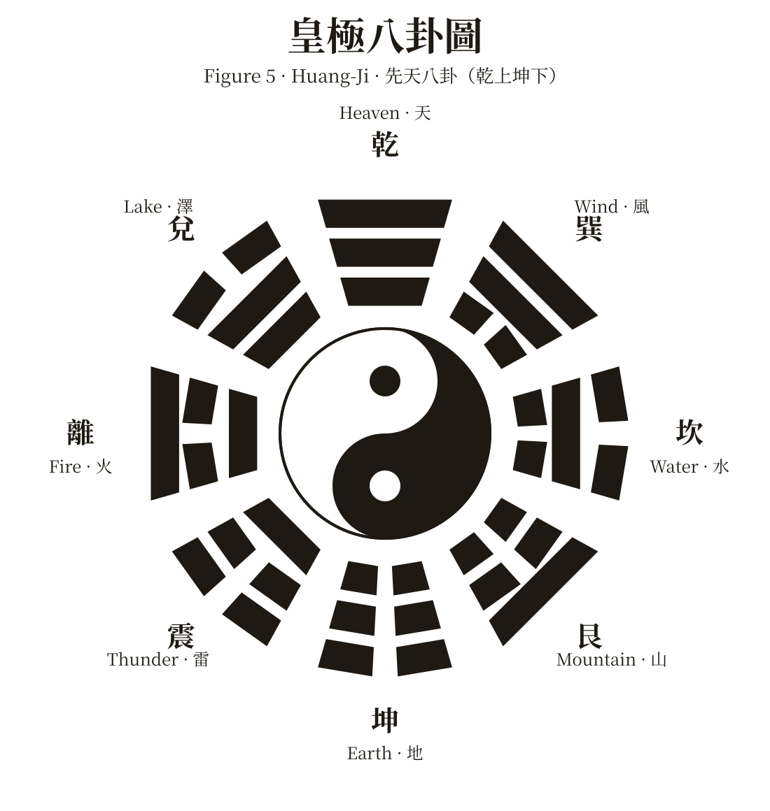

本教材不公開，僅供核准學員閱讀。請先用 Google 帳號登入。V4 語橋學院已核准的老師可直接進入，不用再申請。
請用 Safari 或 Chrome 直接開啟本頁再登入；LINE 等 App 內建瀏覽器無法完成 Google 登入。
The True Meanings of the Three Treasures
and Cultivation of Tao
Receive the Tao Transmission to Initiate the Revival of One's Innate Nature & Transcend the Six Pathways of Reincarnation
得道以恢復本性自然，並超越六道輪迴
This book is meant to promote greater inter-faith understanding and not meant specifically for Muslim consumption.
Please be aware of local publication laws before bringing into your country of residence.
本書旨在促進不同信仰之間的相互理解，並非專為穆斯林讀者而作。
將本書帶入您的居住國之前，請先留意當地的出版法規。
書頁 1 是與封面相同的黑白圖檔頁、書頁 2 是空白頁，這三頁書上都沒有印頁碼；本站依原書順序補記，不放掃描圖，內文一律重新排版。
全書 40 個條目，頁碼是書上印的頁碼。狀態分三種：已全文轉錄 句子卡可直接共讀；已有每頁總覽 逐句轉錄進行中；待拍攝 等下一批書頁照片。
書上中文段與英文句是分開刊登的，本站照原樣分開列：先中文段、再英文句（F-01 – F-15），不宣稱逐句對譯。書頁 13、14 的註 1、註 2 與五倫、八德細目收在本節後段。書頁 14 末行在書上截斷，已標為 F-16 待核對，本站不自行補寫。
共 88 句（B-01 – B-88），照書上英文原樣轉錄；跨頁句 B-34、B-39、B-49、B-56、B-63、B-68／B-69、B-88 皆以完整形收錄。這 13 頁的中英文不是逐行對照，句子卡維持「以英文句為主、中文作學習解釋」：書上的中文段（書頁 15、20、22、24）照原樣穿插在相應位置，書頁 16 的可蘭經中文註、書頁 17 的龍天表註、註 3（書頁 19–20 完整版）與註 4（收圓，書頁 23 全文）收在本節後段。中文大意與五層解釋是學習用 AI 草稿，待老師審定，不宣稱是書上逐句對譯。朗讀用 Azure 錄音：每張卡一個播放鍵，依序播中文大意 1 遍、英文 3 遍（美式女聲 en-US-JennyNeural、中文女聲 zh-TW-HsiaoChenNeural，兩段合併為一個音檔全站共用；尚未上線的句子先以裝置語音代替）。
可蘭經38:72：「當我把他造出來，並將我的精神（靈性）吹入他的體內的時候」（註：原文阿拉伯語 'ruh' 正式翻譯是 'spirit'，而不是一般翻譯的 'soul'。）
The Long Tian Form is called the Heavenly Dragon Form because the "dragon" refers to the Heavenly dragon safeguarding the form to be delivered to Heaven for registering into the Book of Life.
大意：龍天表之所以稱為「天龍表」，是因為「龍」指的是護送表文上天、登記進生命冊的天龍。
Filial Piety（孝道）: The phrase Filial Piety is a special term created by earlier translators of Asian cultures to explain the Confucian emphasis on the meaning and requirements of a child's love, duty and respect towards their parents. 'Filial' is descended from Latin filius, meaning "son" and filia, meaning "daughter". In English (where it has been used since at least the 14th century) the same word has always applied to cover both daughters and sons. The word 'filial' has long carried the dutiful sense "owed to a parent by a child", as found in such phrases as "filial respect". These days it can also be used more generally for any emotion or behaviour of a child to a parent, e.g. "filial love". Piety（虔誠）refers to a quality or state of being pious or reverent, e.g. religious piety. Thus the combined phrase "filial piety" covers the "fidelity to natural obligations to parents", to a state equating to a "religious devoutness". It is much more than a mere "honour thy parents" in Western culture. In Confucian values, filial piety is an innate virtue demonstrated through venerable respect towards one's parents, elders, and ancestors. The confucian belief has always been among all goodness one can perform, filial piety ranks first before all others. Thus when one can successfully practise filial piety, one will then also be able to achieve all other innate virtues, such as: sibling love（悌， ti), loyalty（忠， zhong), honesty and trustworthiness（信， xin), propriety（禮， li), righteousness（義， yi), integrity（廉， lian), shame（恥， chi). It is because if a child disobeys these Innate Virtues, he/she will disappoint and cause worry and shame to their parents. In addition, filial piety goes much beyond mere obedience to one's parents. It goes to the extent of trying one's absolute best to listen to their parents' advice, obey their instructions, accept their recommendations, satisfy their aspirations and needs, etc., within the sound limits of laws and morality so as to bring honourable reputation to one's parents and ancestors through one's presence in the society. This timeless tradition of maintaining harmonious parent-child relationships is very important because one's filial piety will bring peace and harmony in one's family, a harmonious family will bring stability to the society, and a stabilised society will bring prosperity to the country. Thus it is not a surprise that filial piety also forms the basic core requirement of being a responsible person.
大意：本註解釋 Filial Piety（孝道）這個譯詞的由來與分量：filial 源自拉丁文 filius（子）、filia（女），piety 是虔誠；合起來指子女對父母如宗教般虔誠的天然義務。儒家以孝為眾善之首——能行孝，悌、忠、信、禮、義、廉、恥諸德也都能隨之成就；孝也不止於順從，還要在法律與道德的合理範圍內，盡力聽從、滿足父母，讓父母與祖先因自己在社會上的表現而得榮耀。家和則社會安定、國家繁榮，所以孝也是做一個負責任的人的核心要求。（中文大意為 AI 草稿，待審定。）
Full and Complete Restoration of Spirits (Shou Yuan 收圓) is the completion of the widespread Final Salvation among the Three Realms so that all religions can restore to their original root of the Heavenly Truth and all God-derived spirits could be saved by each working on restoring their True Innate Nature, having achieved their Holy Achievements and return to Heaven. This is achieved when both the restoration is completed on a personal level as well as an overarching level.
大意：收圓，就是三曹廣行末後普渡的圓滿完成：各宗教同歸天道的本源，一切源自上帝的靈性各自努力恢復真本性、成就聖果、回到天庭；當個人的恢復與整體的恢復都完成時，收圓才算成就。（中文大意為 AI 草稿，待審定。）
共 219 句（C1-01 – C1-219），照書上英文原樣轉錄；跨頁句 C1-07、C1-35、C1-51、C1-58、C1-79、C1-83、C1-92、C1-141、C1-154、C1-215 皆以完整形收錄。這 26 頁的中英文不是逐行對照，句子卡維持「以英文句為主、中文作學習解釋」：書上中文段 17 段（書頁 28、31、33、34–35、36、37、38、40、41、42、43、44、45、46、48、49）照原樣穿插在相應位置，註 5–11 與圖一至圖五對照表收在本節後段。中文大意是學習用 AI 草稿，待老師審定，不宣稱是書上逐句對譯。
Material／Body／Mind／Spirit（由低至高排列的階梯圖）
Heavenly Schema (天盤 Tian Pan) 是指理氣象三天，就像棋盤上棋子各居其位，各有其排列次序或升降。The Heavenly Schema is a depiction of the different celestial positions and levels in the Three Dimensions (Heaven of Ultimate Truth, Dimension of Spiritual Consciousness and World of Material Consciousness) as a result of one's spiritual achievement. Each spirit thus has its own specific area that they reside in and the Heavenly roles they partake. This is like a chess board plate where the chess pieces on it follow a set rule of sequence, order, and movements, in the same ways as how one's Heavenly position can be advanced or be demoted.
Mi-Le Buddha is the tenth Buddha in charge of the current cycle. He is the successor of the ninth Buddha - Shakyamuni Buddha in the cycle. Mi-Le is also known as the saviour - "Messiah" in Judaism and Christianity, and the future Buddha - "Maitreya" in the Buddhism.
The name "Ji-Gong" comes from a well known Buddhist monk in the 12th century in China. The monk was famous for using his supernatural power to help sentient beings in the society.
Yue-Hui Bodhisattva is a Bodhisattva known as Candraprabha (月光菩薩) in Buddhism and Lunar Star Lord (太陰星君) in Taoism. Candraprabha literally means "Moonlight". Moonlight has a meaning of mercy and perfection.
Tao Propagation Schema (道盤 Tao Pan) 是指大道普渡的所在，即三曹。The Tao Schema relates to the affairs and locations of Tao propagation. The current Tao Schema covers the areas of the Three Realms where the Tao is widely propagated - namely the Celestial Spiritual Realm, Humanly Realm, and the Underworld Realm.
Six pathways of reincarnation: 1. The Celestial Realm (Deva-gati)；2. The Asura Realm (demons, Asura-gati)；3. The Human Realm (Manusya-gati)；4. The Animal Realm (Tiryagyoni-gati)；5. The Hungry Ghost Realm (Preta-gati)；6. The Hell Realm (Naraka-gati)
Five Aggregate Causes 五蘊：Material Sensation 色；Mental Reception and Attachment 受；Mental Thoughts and Contemplation 想；Action and Fulfilment 行；Mental Recognition, Comprehension and Subconscious Memory 識
| 說明 |
|---|
| Tao, (Heavenly) Mater, God, Truth, |
| Primordial void, |
| The primordial state of one's spirit, |
| Wu-Ji (無極), |
| Spirit, Buddha Self, True Self, Inner Nature, Innate Conscience, |
| No birth or cessation, no shapes or forms, no likes or dislikes, and no good or evil, |
| Void and Miraculous Essence. |
| 說明 |
|---|
| "Tao generates one", |
| The primordial motion of Tao, |
| The primordial action state of one's spirit (初發心). The natural actions and deeds derived from one's Innate Conscience, e.g. one's innate virtues of wisdom, loving kindness, righteousness, shamefulness, and propriety, etc., |
| The state where the Tao manifests its pure actions without prejudice, desires or attachments, |
| The initial stage of Tai-Chi (太極). |
| 說明 |
|---|
| "One generates Two". |
| The cyclic interactivity where Yin (negative energy) and Yang (positive energy) increases and decreases relatively. |
| Tai-Chi's duality state, known as the "Dualism of Yin and Yang" (太極兩儀). |
| "0" and "1" of binary processing, "Eve" (Yin) and "Adam" (Yang), Shiva (Yin, destroyer) and Brahma (Yang, creator), female and male, night and day, wet and dry, good and evil, likes and dislikes, cycles and reincarnation, etc. |
| 說明 |
|---|
| "Two generates Three" |
| The Five Agents (Wu-xing, 五行) relationship-cycles |
| Tai-Chi's four-form state (四象), known as the "Four Forms of the Yin and Yang cycle" — birth, maturity, decay, and death |
| 說明 |
|---|
| "Myriad things" (萬物). |
| The state of Huang-Ji (皇極) representing all things and creatures in the material dimension. |
| All things and creatures are created from the Four Fake Elements (四大假合) interacting with the affinities from the Five Aggregate Causes (五蘊). |
| The 64 phenomena (64 hexagrams of I-Ching) from the combination of Eight Trigrams and its interrelated 384 situations of the universe. |

共 696 句（C2-01 – C2-696），照書上英文原樣轉錄；跨頁句 C2-11、C2-21、C2-57、C2-207、C2-281、C2-359、C2-557、C2-577、C2-637、C2-649、C2-665 皆以完整形收錄。這 35 頁的中英文不是逐行對照，句子卡維持「以英文句為主、中文作學習解釋」：書上中文段 15 段（書頁 59、69、72、73、73–74、75、76、77、79、82、83、85）照原樣穿插在相應位置，註 13 與書頁 85 註、71 頁聖訓原文圖、72 頁冠頂訓與訓中訓、小標 4 處收在本節後段。中文大意是學習用 AI 草稿，待老師審定，不宣稱是書上逐句對譯。C2-696 為書頁 88 末行截斷句，後續在書頁 89，待第三章照片後再補，不臆測補寫。
Final Judgment (大對案) will be conducted by Heavenly or Hell officials judging on the resolution outcomes amongst the debtor and creditor parties.
Note: The biblical phrase 'everlasting kingdom' (永遠國度) (e.g. 2 Peter 1:11, Daniel 7:27, Psalms 145:13) refers to our spirits' homeland from where we originally descended, viz. Heaven of Ultimate Truth.
書頁 71 印有聖訓中文原文全幅，原文中抽出的字組成 gospel 字形（訓中訓）；圖中密排中文不逐字轉錄，僅此註記。
Everyone's spirit is from God and has the same innate qualities
John 14:5-14:11
Manna - The true bread from heaven, the bread of life - John 6:30~38
Matthew 28:19
頁首殘段（前半句未見於前一頁）：書頁 57、61、65、67、71、75、77、79、83。頁末未完成句（後續未見於次頁，不列卡）：書頁 64、66、68、70、76、78、80、82、84 末句，以及書頁 88 上半末「It is the most」（可能續至書頁 89，待第三章照片確認）。書頁 88 末句 C2-696 在書上截斷，後續在書頁 89，待第三章照片後再補。書頁 72 冠頂訓與訓中訓字小密集，錄入後請逐字核對。書頁 75 中文「皇中」疑為「皇母」之誤植或異體，照原樣收錄。同句重出照收未刪併：C2-165 與 C2-107（書頁 60）、C2-592 與 C2-584（書頁 80）、書頁 82「most X ceremony」排句為書頁 80 同排句之完整重出、書頁 88「most X matter」排句為書頁 78 同排句之延伸重出。
讀書會在 Zoom 線上進行，台灣時間每週 5–6 天晚上 21:30–22:30（印度時間 19:00–20:00），學員人數不限。讀法是逐句共讀：每句先讀英文，再開「詳細解釋」剝洋蔥五層——大意、句型、單字片語、道義內涵、記憶＋仿造句，解釋一律繁體中文。